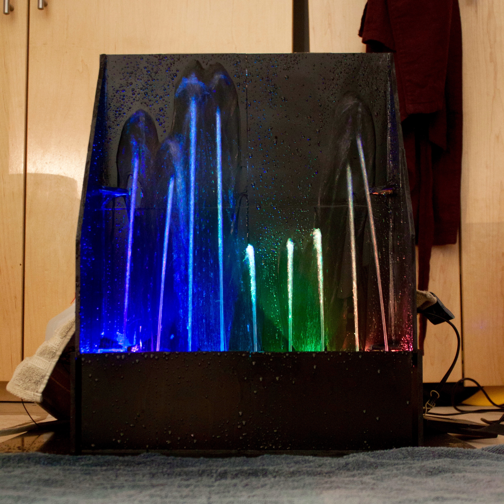
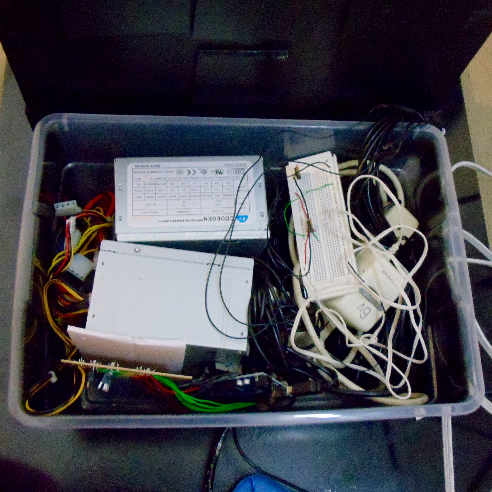
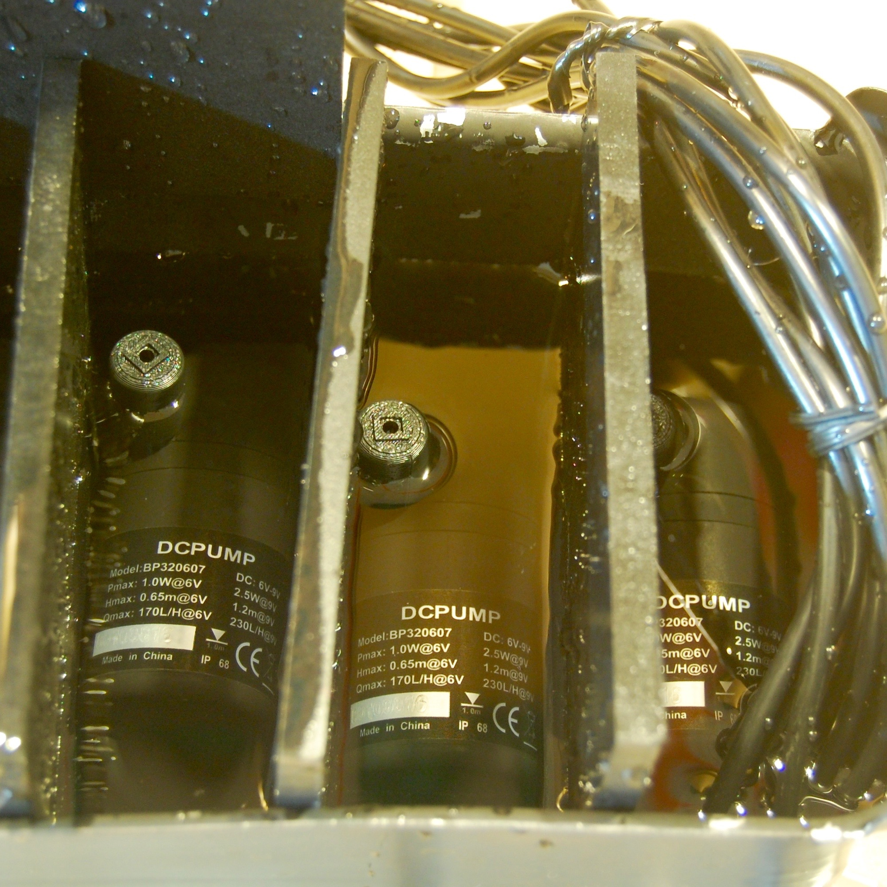
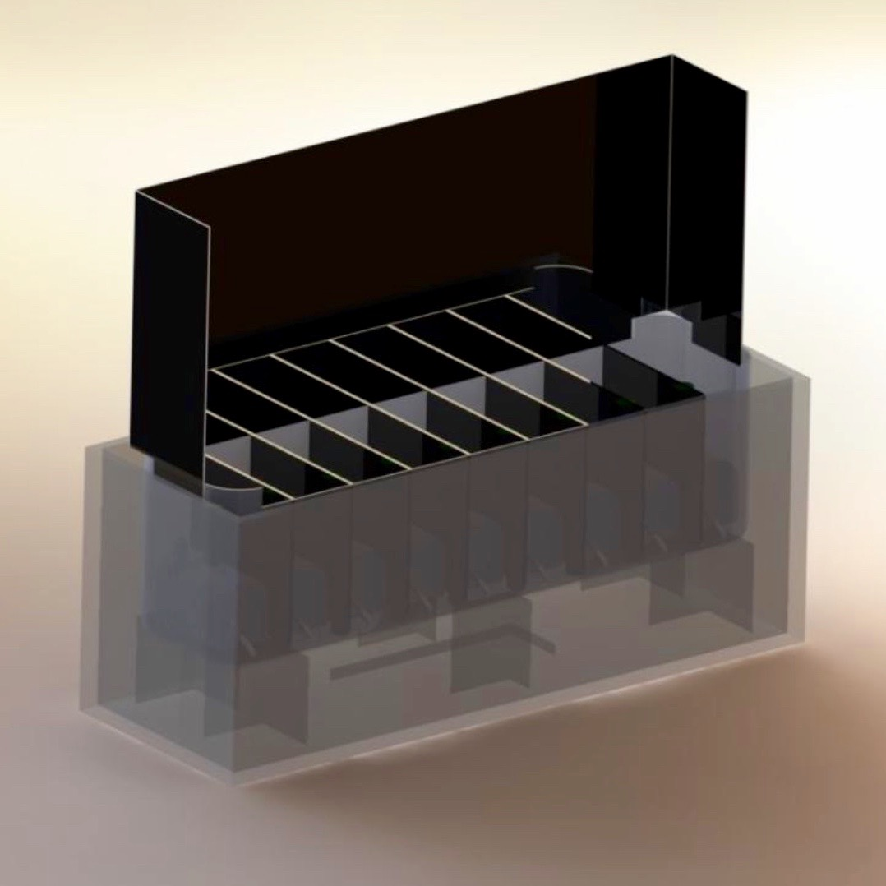

Juliana Nazaré
Fountain Audio Visualizer
Fountain Audio Visualizer
September - December 2012
For Olin’s Principles of Engineering project, I worked on a small team to create a fountain that dances to music. I had two roles on the team. I was in charge of writing the Arduino code that interfaced with the Python GUI and the electrical system and I wrote the Python code that parsed through a media file, using an FFT to find the relative powers of each frequency range present, and then convert these powers to PWM signals to send over a serial to the Arduino.
The final project is demonstrated in the video below.

The working fountain
The working fountain

Waterproofing the electrical setup
Waterproofing the electrical setup

Testing the waterproofing setup
Testing the waterproofing setup

Render of the fountain
Render of the fountain
Teammates: Arjun Aletty, Eerik Helmick, Chris Mark